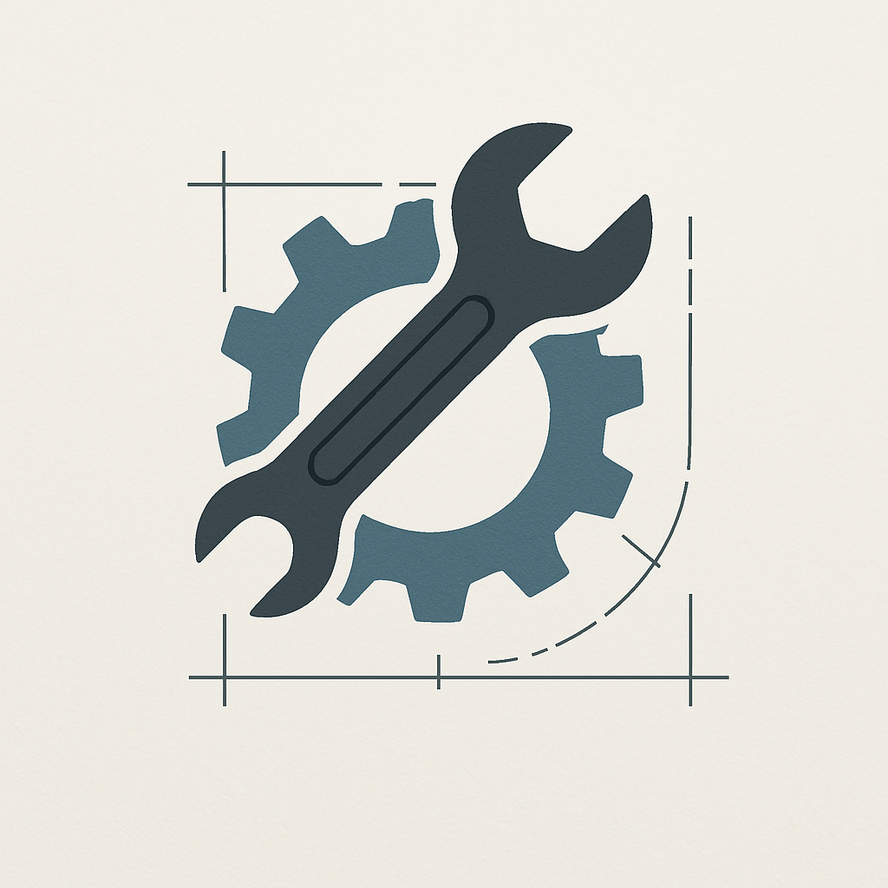
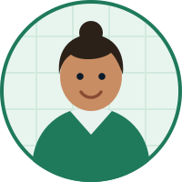

Keine dummen Fragen
Wenn du dieselbe Sache dreimal fragst, erklären wir sie dreimal – beim dritten Mal wahrscheinlich anders als beim ersten.

Baustelle · Under Construction
Diese Seite von Mechaliker ist eine Vorschau und noch nicht in Betrieb. Schau dich gern um – nur verlass dich bitte auf nichts, was hier steht.
sTUndeMitEinemlaCHen
Der Hinweis kommt beim nächsten Besuch wieder.
Start › Tutor:innen
Über unsMechaliker ist keine Nachhilfe-Kette. Wir sind Studierende und Absolvent:innen der TU Wien, die dieselben Prüfungen geschrieben haben wie du – teilweise auch zweimal.
2019 saßen wir zu viert im Freihaus und versuchten, Mechanik 1 zu retten. Einer konnte Fachwerke, eine andere die Schnittgrößen, niemand die Reibung. Also erklärten wir uns gegenseitig, was wir konnten – und stellten fest: Erklären ist der schnellste Weg, selbst zu verstehen.
Im Semester darauf saßen plötzlich zwölf Leute dabei. Irgendwann fragte jemand, ob er dafür zahlen dürfe. Heute sind wir vierzehn Tutor:innen, und das Prinzip ist unverändert: Wir erklären so, wie wir es damals gebraucht hätten.
Und das Motto war schnell gefunden: sTUndeMitEinemlaCHen

Wenn du dieselbe Sache dreimal fragst, erklären wir sie dreimal – beim dritten Mal wahrscheinlich anders als beim ersten.
Wenn wir glauben, dass sich ein Antritt nicht ausgeht oder dass du uns gar nicht brauchst, sagen wir das. Auch wenn es uns eine Buchung kostet.
Formeln merkt man sich für eine Woche. Ein sauberes Modell trägt bis Mechanik 3 und darüber hinaus.
Niemand lernt unter Druck. Deshalb darf gelacht werden – das steckt schließlich schon im Namen.
Du bekommst die Person, die zu deinem Fach passt – und wenn die Chemie nicht stimmt, tauschen wir ohne Diskussion.
Bauingenieurwesen, 8. Semester
Zweimal bei Mechanik 2 angetreten, beim zweiten Mal mit Auszeichnung. Erklärt am liebsten mit Skizze und Alltagsbeispiel – Balkone, Regale, Fahrradrahmen.
Maschinenbau, Masterstudium
Hat sich in die Dynamik verliebt, nachdem er sie einmal nicht bestanden hatte. Bringt jedes Problem auf dieselben vier Schritte herunter, bis es fast langweilig wird.

Technische Physik, Doktorat
Kommt von der Mathematik her und schließt die Lücken, die man aus der HTL mitschleppt. Zuständig für alle, bei denen es schon beim Vektorprodukt hakt.
Neben den dreien oben unterrichten elf weitere Tutor:innen aus Bauingenieurwesen, Maschinenbau, Wirtschaftsingenieurwesen und Technischer Physik. Wir vermitteln nach Fach, Termin und Sprache – Deutsch und Englisch.
Wer mitmachen will, muss die entsprechende Lehrveranstaltung mit gutem Erfolg absolviert haben und eine Probeeinheit halten – vor zwei von uns, die dabei absichtlich blöde Zwischenfragen stellen.
Wir suchen laufend Verstärkung, besonders für Dynamik und Schwingungen. Faire Bezahlung, freie Zeiteinteilung, kein Vertriebsdruck.
Die Bestehensquote zählt alle, die mindestens vier Einheiten bei uns hatten und danach angetreten sind.
Die erste Einheit ist gratis – danach entscheidest du in Ruhe.